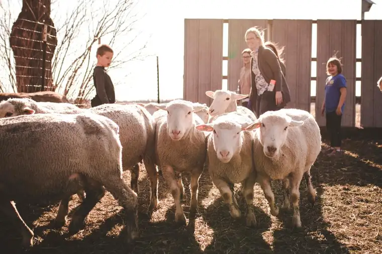

EAST GRAND FORKS, Minn. — For 50 long years, Huntington’s disease has followed Terry Fore around.
It began with her first date with her first husband, Darrell, who died from the disease in 2007.
“We got married when I was 18; when he was 37, he started to show symptoms,” she recalls.
His father, Orville, also suffered from Huntington’s, an inherited condition causing the breakdown of nerve cells in the brain.
The disease affects muscle control, leading to frequent falls, aspiration during eating and misunderstanding by others, Fore says. “Because they can’t articulate words, they slur, so it can sound like they’re on a good (alcoholic) bender.”
Darrell’s grandfather, another Huntington’s victim, died by suicide “because everyone thought he was crazy.”
“They call it ‘The Dragon,'” she says, “because it can be a mixture of Parkinson’s and dementia can go with it, too.”
Her sister-in-law, Judy, also succumbed to the disease. In her grief, Fore started a Huntington’s support group in East Grand Forks.
Though her son Luke, 41, also lives with Huntington’s, for the first time in five decades, she feels optimistic.
“I’ve now got a four-letter word called ‘hope,'” Fore says, referencing Harvest Hope Farm in Moorhead, which is breeding sheep to help lead to a cure. “One sheep can be equivalent to one year’s medicine for one person. What an impact this could make on someone’s life.”
Possible key
Lynn Kotrba, who lost her mother and sister from Huntington’s, says the disease brought dread her whole life. But ever since she and her husband, Jason, began raising sheep on their north Moorhead land, it’s lifted.
“I used to, probably 10, 15 times a day, worry about it, but I don’t anymore because we’re doing something to contribute to finding the cure,” she says. “We truly believe the answer is right there; we just have to work through the process.”
The animals at Harvest Hope Farm, their nonprofit, also include chickens and a donkey, but the sheep are especially notable since some produce an abundance of a glycolipid that people with Huntington’s lack.
Kotrba has never been tested for Huntington’s but may reconsider, because those who’ll benefit will need to test positive.
The farm received its first 10 pregnant ewes from their South Dakota base the day before Easter.
The symbolism of Scriptural sheep and the Lamb of God rising from the dead at Easter wasn’t lost on the couple and their seven children, devout Christians, Kotrba says.
Of the 15 lambs born in May, 14 survived, and 10 tested positive for the gene. They hope to increase the flock to several hundred within a few years. One lamb has grown especially fond of her husband.
“When he goes out to feed him in the morning, he just walks up and stands there and lets Jason rub his neck,” Kotrba says, adding, “We’ve all become attached to them. They’re wonderful animals, and to think they hold the key to this disease is amazing.”
Mission for others
Desiring to be a light in the world, the family has extended its mission beyond sheep breeding.
In May, they welcomed the first of 17 youth to their Harvesting Hope for Others Farm Camp, which provides opportunities to grow and harvest vegetables, then donate fresh produce to families in need.
Participants, ages 7 to 15, also experience nature through organized activities and free play in the woods.
Two of the campers, originally from the Middle East, had a pet donkey in their home country, Kotrba says. “When they found out about our donkey, Gus, their eyes just lit up.”
Vicky Bailey, Glyndon, Minn., seeing how attached kids are nowadays to their electronic devices, registered her grandkids for the two-hour camp. But the first day, one “refused to get out of the car.”
Things changed quickly, however, after an evening in the woods searching for a goose nest ended in “scaring up a deer,” she says, and now he loves camp.
“They even enjoy pulling weeds together; they make it a game,” Bailey says, noting that recently the kids harvested more than 200 homegrown potatoes.
They’ve also made ice cream in a bag and turned cream into butter. “(The Kotrbas) are so patient and kind. I love that they started this as a mission to help her family, and how it’s just blossomed,” she says.
One day at a time
Kotrba encourages anyone interested in the project, or curious about tasting roasted lamb, to join them for a casual night on the farm at their upcoming fundraiser.
“There’s going to be a bonfire and a couple people playing guitar,” she says, along with a bake sale, silent auction, kids’ activities and the chance to commune with animals and nature. Proceeds will go toward animal care, expansion of garden boxes and camp opportunities, a rosary walk completion and increasing the herd.
A plaque created by a friend bearing words from John 10:14, “I know my sheep…” hangs on their barn, reminding the family daily of their goal. But when asked how she manages working outside the home, raising seven children and being engaged in these projects, Kotrba cites her mother’s favorite motto: “One day at a time.”
“That’s the only way we can do it,” she says, expressing awe at the willingness of their children to help and the abundant grace that’s come with their willingness.
“My mom’s been gone since I was 13, but especially now, I feel like she’s just right there,” Kotrba says. “I want to be able to reach through that veil and touch her.”
She senses her mother and sister watching them, she says, encouraging them onward.
“We just deal with whatever we have to that day, not worrying about what’s going on next month, a year from now or maybe even a week from now,” she says. “Even though most days we’re exhausted and dead-tired, we can’t stop.”
If you go
What: Harvest Hope Farm spaghetti dinner and silent auction
When: 5 to 8 p.m. Friday, Sept. 21
Where: Harvest Hope Farm, 9695 10th St. NW, Moorhead
Info: Free-will donation will help sustain the gardens and animals for Harvesting Hope for Others Farm Camp and research a Huntington’s disease cure; www.harvesthopefarm.org
[For the sake of having a repository for my newspaper columns and articles, I reprint them here, with permission, a week after their run date. The preceding ran in The Forum newspaper on Sept. 8, 2018.]